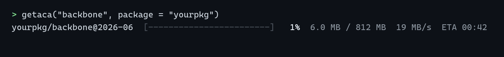

external data a package depends on, pinned to exact bytes

getaca retrieves, verifies and caches the large files an R package needs but cannot ship, such as a reference dataset, a trained model or an archive of examples.
A package declares each file as a resource: a name, a version, the URLs that serve it and the SHA-256 checksum of its bytes. The declarations form a registry that ships inside the installed package. getaca resolves a request through an explicit policy, checks what arrives against the checksum, records where it came from and returns an ordinary local path, so the same installed package resolves the same bytes on every machine. You decide whether the declaration stays fixed with each release of your package or follows a remote registry that you maintain.
getaca supports:
-
Package checks. Under
R CMD checkresolution is offline whatever policy is set, and three helpers keep tests, examples and vignettes passing when a resource is not cached (Surviving R CMD check and CI). - Data releases between package releases. A remote registry can repair a dead mirror or publish a new version without a CRAN release. A version already published keeps naming the same bytes, and the registry can be signed with Ed25519 against a key your package ships.
-
Errors that name who can act. Each failure is a classed condition with an
actorfield (user, author or upstream), so a declaring package can catch the ones its users meet and answer in its own words. - A managed cache. Bytes enter the cache only after verification, are stored once under their checksum and are re-hashed on a schedule. Retention sweeps after every retrieval remove abandoned transfers and superseded versions and keep the cache under a size ceiling.
-
Provenance.
getaca_info()reports the mirror that served the bytes, the registry state that chose them, the licence, the DOI and when the copy was fetched and last verified. - Archives and multi-part files. An archive can be unpacked once in the cache, a file can be declared as parts that compose to the checksummed artefact, and credentials for registered-access hosts are read from environment variables at request time.
Hashing follows the Secure Hash Standard (FIPS 180-4), and signing follows Ed25519 (RFC 8032). Both are implemented in C inside the package, and transfers go through curl.
Installation
Install the released version from CRAN. Windows and macOS get a binary and need no build tools:
install.packages("getaca")The development version compiles C code. Install the build tools for your operating system first:
| Operating system | Build tools |
|---|---|
| Windows | Rtools matching your R version |
| macOS | Run xcode-select --install in Terminal |
| Debian / Ubuntu | Install r-base-dev
|
Check that R can find the compiler:
pkgbuild::has_build_tools(debug = TRUE)Then install getaca from GitHub:
# install.packages("pak")
pak::pak("gcol33/getaca")The C code uses no external library. On Windows it links the system’s bcrypt library, which supplies the random seed for a signing key. The curl package needs libcurl, which on Linux is a system package when curl is built from source.
Usage
- Declare a file with
resource(): its name, version, URLs and SHA-256 checksum. - Collect the declarations with
registry(). - Retrieve the file with
getaca(), which returns a verified local path.
The example declares a small zip archive from this repository, pinned to a release tag:
library(getaca)
url <- paste0("https://raw.githubusercontent.com/gcol33/getaca/v0.1.6/",
"tests/testthat/fixtures/sample.zip")
sha <- "87d05c681c448a4fd0a88ca6e816f2f78f84319b7f02f7477be55995fc44c259"
sample_zip <- resource("sample", "0.1.6", urls = url, sha256 = sha)
reg <- registry(package = "mypkg", resources = list(sample_zip))
path <- getaca("sample", registry = reg)
path
#> [1] "<cache>/mypkg/sample/0.1.6/raw/sample.zip"The cache lays the file out by package, name and version. A second call returns the cached copy without a transfer.
A resource can also carry the step that unpacks it, so the call returns the directory. The archive is verified first and unpacked once:
sample_dir <- resource("sample", "0.1.6", urls = url, sha256 = sha,
processor = unpack())
reg <- registry(package = "mypkg", resources = list(sample_dir))
dir <- getaca("sample", registry = reg)
list.files(dir, recursive = TRUE)
#> [1] "names.csv" "tables/ranks.csv" "tables/synonyms.csv"The checksum has to come from the bytes. registry_draft() takes the URLs, or a Zenodo, figshare or Dataverse identifier, retrieves each file once and returns a registry with the checksums filled in.
In a package, registry_write() stores the registry at inst/getaca/registry.rds, and every later call reaches it with the package name alone:
path <- getaca("sample", package = "mypkg")Declaring Resources covers the full record, with mirrors, sizes, licences, DOIs, parts, processors and credentials.
Passing R CMD check
R CMD check runs without a network, so a package with a 4 GB dependency cannot download it there. Resolution falls back to offline under check whatever the policy says, and three helpers cover the places that need the file:
# in tests
getaca_skip_if_unavailable("backbone", package = "yourpkg")
# in examples and vignettes
path <- getaca_optional("backbone", package = "yourpkg")
# anywhere a logical reads better
getaca_available("backbone", package = "yourpkg")A CI job pointed at a pre-seeded GETACA_CACHE finds every file already there. Surviving R CMD check and CI gives the GitHub Actions setup and a CRAN checklist.
Policies and channels
A resource record is fixed: one name and version names one set of bytes. A channel maps the name onto one record, and a channel can move. The policy decides where that mapping is read from: bundled, the registry shipped with the package (the default); current, a remote registry with the bundled one as fallback; pinned, a frozen local snapshot; or offline, cached and bundled information only. A remote registry that redefines a published version is rejected. Policies and Channels describes each policy and how to sign a remote registry.
Handling failures
A retrieval returns the bytes the package was built against, or an error naming who can act on it. When several mirrors return identical bytes that do not match the declared checksum, getaca_error_declaration points at the registry. A declaring package can catch a condition and answer in its own vocabulary:
path <- tryCatch(
getaca("backbone", package = "yourpkg"),
getaca_error_unavailable = function(e) {
stop("The backbone is not installed and no network is available.",
call. = FALSE)
}
)Handling Failures lists every condition with its cause and the party who can fix it.
The cache
Bytes land in a temporary file named after the declared checksum, are sized and hashed, and only then join the cache, so an interrupted transfer never appears as a cached resource and resumes on the next attempt. Two packages declaring the same file keep one copy. getaca_catalogue() lists what the installed packages declare and what the cache holds, and getaca_clean(dry_run = TRUE) shows what the retention sweeps would remove and why. The Cache covers the layout, provenance, progress display and retention settings.
Choosing between getaca and the alternatives
A companion data package suits data that fits a repository and is released with the code. pins shares data sets, models and other R objects across projects through boards. BiocFileCache keeps a persistent cache of files that the user adds, updates and retrieves. pooch is the Python library that ships a registry of file names and hashes with a package. getaca is built around a package declaring what it needs, with a version that labels the data and channels that can move between releases. Choosing Between getaca and the Alternatives sets these side by side.
Documentation
Start with Quick Start: one resource declared, retrieved, checked and cached.
- Declaring Resources: every field of a record, drafting checksums, parts, processors and credentials.
- Policies and Channels: what each policy resolves through, and signing a remote registry.
- Surviving R CMD check and CI: the check-safe helpers and a seeded cache in CI.
- The Cache: layout, verification, provenance and retention.
- Handling Failures: each error condition and who can act on it.
- Migrating an Existing Downloader: replacing a hand-written download and cache with a declaration.
- Choosing Between getaca and the Alternatives: companion packages, pins, BiocFileCache and pooch.
- Full reference: every function, grouped by job.
Getting help
Questions and bug reports go to the GitHub issues. A bug report is easiest to act on with a small reproducible example, for instance made with reprex.
Contributing
Pull requests are welcome; see the contributing guide.
Support
“Software is like sex: it’s better when it’s free.” — Linus Torvalds
I’m a PhD student who builds R packages in my free time because I believe good tools should be free and open. I started these projects for my own work and figured others might find them useful too.
If this package saved you some time, buying me a coffee is a nice way to say thanks. It helps with my coffee addiction.
Acknowledgements
The Curve25519 field arithmetic, point addition, Montgomery ladder and scalar reduction in the Ed25519 code are derived from TweetNaCl by Daniel J. Bernstein, Bernard van Gastel, Wesley Janssen, Tanja Lange, Peter Schwabe and Sjaak Smetsers, released into the public domain by its authors.
License
getaca is licensed under MIT. The Ed25519 code derived from TweetNaCl is distributed under the same licence; inst/COPYRIGHTS records its origin.
Citation
To cite getaca in publications use:
Colling G (2026). _getaca: Reproducible External Data Dependencies_.
doi:10.32614/CRAN.package.getaca
<https://doi.org/10.32614/CRAN.package.getaca>. R package version
0.1.6, <https://gillescolling.com/getaca/>.BibTeX: